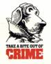

Criminal Law Class Notes �

Today, we start our first case. We continue to be interested in the burden of proof beyond a reasonable doubt.
Owens was being tried for DUI. What are the facts? He was in a
driveway. He was passed out. There were some empty beer cans in his
car. There was an empty can between his legs plus some empties in the
back seat. The police received a call from the neighbors about a
suspicious car. That�s why the police were out in the area. The engine
was running when Owens was found. The lights were also on. It was
about
Does the defendant deny he was intoxicated when he was caught by the police? No. Why should the defendant be acquitted on his theory? He would argue that he was on a private highway, not a public highway. He�s not doing anything wrong if he�s not on a public road. On a private road, he can be as drunk as he chooses.
�Small things that aren�t so small�
What did the defense attorney do strategically in this case that was unusual? The defense did not introduce any evidence. That�s not ordinary, but it�s within the rights of the defense attorney. This sends a clear message: the government failed to prove their case beyond a reasonable doubt, therefore the defense doesn�t have to put on any evidence.
What about making a motion for a directed verdict of acquittal? Defense attorneys very frequently do this, at least to just try it.
What else did the defense attorney do? He only asked two questions. The defense also waived the right to a jury trial.
In criminal law, think about what the attorneys do in the way of strategy.
Why waive your right to a jury? Juries might not care about the law and might be prejudiced against drunk drivers.
What did the prosecutor do in this case that was an error that almost cost him the case? He failed to introduce a copy of the defendant�s driver�s license into evidence. This is a tiny little error that could have had a big impact.
Why vote for conviction? There are the reasons given in the appellate decision.
Why vote against conviction? There�s no proof as to why he was in the driveway. For example, what if he went to a friend�s house (sober) and drank at the friend�s house and drank in the car?
A real jury will react a certain way when a defendant remains silent. They will assume he�s hiding something. But that�s not what the Constitution says. The defendant and his counsel have the right to remain categorically silent.
What about the phone call about the suspicious car? Was it introduced into evidence what the car looked like? Did it match the description? What if it was a non-distinct, common car?
Do the empty beer cans matter? Do they suggest that the person has been drinking while driving?
Each juror inevitably brings their own life experience into the jury room.
How do we know the beer cans weren�t from a different night? Everybody in the trial seems to have missed it, but if you had a jury, it might have been brought in.
What about this �tiebreaker� thing? What about the deal with conviction upon circumstantial evidence?
What about voting for not guilty even when you believe the guy did it? Legally, this is valid.
What about the standard of a �rational� verdict?
The only issue on appellate review, as distinguished from the trial court, is whether a reasonable jury could have convicted, not whether they would have acquitted or should have acquitted. The appellate court wasn�t there to see the trial; therefore, the appellate court should not play the role of the �13th juror�. The jury sees stuff that the appellate judge never sees.
Sometimes you won�t put an innocent defendant on the witness stand because you�re afraid of how they will look to the jury.
On appeal, the presumption of innocence is gone. You assume that all of the facts that are in dispute favor the prosecution. The appellate court can overturn the conviction if they think, �How the heck did the jury reach that verdict?�
What�s the issue? Should Ragland have been convicted based on the jury instructions that were given?
The defendant objected to the judge�s use of the word �must�. It seemed to preclude, the defendant said, jury nullification. The defendant would have changed �must� to �may�. One word can make all the difference in the world.
About jury instructions
How do jury instructions get drafted? Before closing arguments, the judge meets with the two sides to discuss what jury instructions should be given. The judge will ask each side for suggested language to use in the instructions. The judge finally decides what to say.
In most states, there are form jury instructions in a book, usually created by the state bar association in that state. They are often written to be understandable to the lay person, and have been approved by the state supreme court.
There is evidence that juries disregard or don�t understand jury instructions. For example, there are four different insanity tests used in different states. In empirical studies, it doesn�t matter what instructions you give to jurors, the verdict is always based on their own view of insanity, which really isn�t the same as any of the jury instructions.
Even if they understand or can understand the jury instructions, they might inadvertently ignore or �not hear� the instructions.
These things make the jury system exciting, frustrating, and important.
So in the instructions, the judge will say you have to be convinced of this, this, this and this beyond a reasonable doubt to convict of such-and-so crime.
Ragland wants the judge to say that if you find A, B, C and D true beyond a reasonable doubt, you may convict, or you can nullify.
Is it a right or an ability (power)?
Why should the jury be told they may nullify if its something they have the power to do, but not the right?
The judge is the authority on the law, while the jury is the authority on the facts.
The power of jury nullification lies with the prohibition of double jeopardy.
Don�t forget: the jury can only nullify one way. If they convict, that decision can be appealed.
They can do it, but do they have a right to do it? Is it good for them to do it?